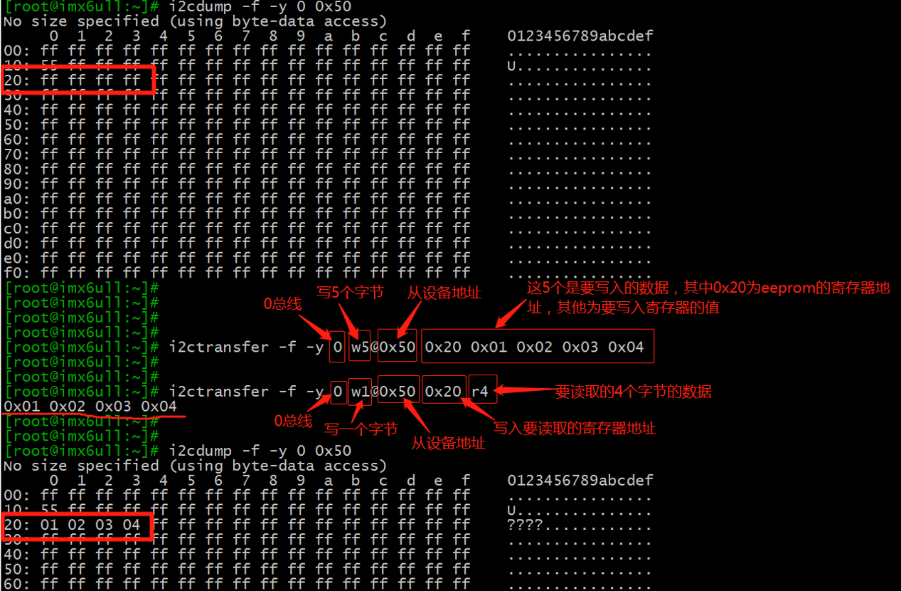

驱动开发-I2C
I2C原理
I2c基础知识
Inter Integrated Circuit 串行总线的缩写，是 PHILIPS 公司推出的芯片间串行传输总线。它以 1 根串行数据线（ SDA ）和 1 根串行时钟线（ SCL ）实现了半双工的同步数据传输。具有接口线少，控制方式简化，器件封装形式小，通信速率较高等优点。在主从通信中，可以有多个 I2C 总线器件同时接到 I2C 总线 上，通过地址来识别通信对象。IIC 接口的协议里面包括设备地址信息，可以同一总线上连接多个从设备，通过应答来互通数据及命令。但是传输速率有限，标准模式下可达到 100Kbps ，快速模式下可达到400Kbps （我们开发板一般在 130Kbps ），高速模式下达到 4Mbps ，不能实现全双工，不适合传输很多的数据。
**串行：**数据位（0和1）是一位接着一位，排成一队，在单一通道（一条线）上依次传输的。
同步：数据传输的节奏（ timing ）由一个统一的、共享的时钟信号来控制和协调。发送方和接收方都步调一致地根据这个时钟信号的跳变来发送和读取数据。
半双工：I2C只有一条数据线（SDA）。这条线要被主机和所有从机共享。在任一时刻，这条线上只能有一个“说话者”来驱动它为高电平或低电平，否则会发生冲突
I2C信号
总线传输的数据不收限制，但是每次发到 SDA 上的必须是 8 位，并且主机发送 8位后释放总线，从机收到数据后必须拉低 SDA 一个时钟，回应 ACK 表示数据接收成功，我们如果示波器上看到的波形就是每次 9 位数据， 8bit+1bit ack 。
I2C协议中数据传输的单位是字节，也就是8位。但是要用到9个时钟：前面8个时钟用来传输8数据，第9个时钟用来传输回应信号。传输时，先传输最高位(MSB)。
- 开始信号（S）：SCL为高电平时，SDA由==高==电平==向低==电平跳变，==开始==传送数据。
- 结束信号（P）：SCL为高电平时，SDA由==低==电平==向高==电平跳变，==结束==传送数据。
- 响应信号(ACK)：接收器在接收到8位数据后，在第9个时钟周期，拉低SDA
- SDA上传输的==数据==必须在SCL为==高电平期间保持稳定==，SDA上的数据只能在SCL为==低电平期间变化==
I2C协议信号如下：

从机收到一字节数据后，如果需要一些时间处理，则会拉低 SCL ，让传输进入等待状态，处理完成，释放 SCL ，继续传输，如上图。
读写时序
写时序
空闲状态：SCL 和SDA 都为高电平。
发送起始信号（Start）：SCL 高电平时 SDA 线从高电平向低电平切换。
发送设备地址：7bit设备地址位（从设备的地址），加上1bit读/写位（0表示写，1表示读）。
等待应答（ACK）：主机等待从设备的应答时，SDA 会被释放到高电平状态，从机通过拉低SDA 来表示ACK，否则则表示 NACK。
发送数据： 如果收到应答信号，主机就会开始发送数据帧。数据帧通常包括要写入的寄存器地址和要写入的数据。
等待应答（ACK）： 主机等待从设备发送应答信号，以确保从设备已成功接收到数据。重复步骤5和步骤6：略。
发送停止信号（Stop）： SCL 高电平时 SDA 线从低电平向高电平切换。
读时序
发送起始信号（Start）和设备地址： 主设备首先发送起始信号来开始通信，然后发送目标设备的地址。
等待应答（ACK）： 主设备发送完地址后，会释放数据线（SDA）并等待从设备的应答。
寄存器地址： 然后发送需要读取的目标设备的寄存器地址。
等待应答（ACK）： 主设备发送完地址后，会释放数据线（SDA）并等待从设备的应答。
设备地址：重新发送设备地址，此时的读写位为1(读)。
等待应答（ACK）： 主设备发送完地址后，会释放数据线（SDA）并等待从设备的应答。
接收数据：主设备向从设备发送数据请求后，从设备会开始发送数据帧，主设备接收从设备发送的数据。
发送应答（ACK）或非应答（NACK）： 主设备在接收每个数据字节后，会向从设备发送一个应答信号（ACK）或非应答信号（NACK），以指示是否要继续接收数据。如果主设备准备好继续接收数据，则发送应答信号（ACK）；如果主设备不想继续接收数据（例如，数据传输完成），则发送非应答信号（NACK）。
重复步骤7和步骤8： 主设备会重复步骤7和步骤8，直到接收到所有需要的数据为止。
发送停止信号（Stop）： 当所有数据都被接收完毕后，主设备发送停止信号来结束通信。
注意：Repeated Start
Repeated Start是一个特殊的起始信号，其时序与普通的起始信号（Start）相同：
SCL 线为高电平。
SDA 线从高电平拉低到低电平。
但它发生在当前通信尚未完全结束之前（即没有发送停止信号
STOP）
I2C设备地址
I2C从设备地址有两种不同长度格式，用于在总线上唯一标识一个设备。
- 7位地址：
- 这是最常用、最广泛支持的地址模式。
- 理论上，7位地址可以表示 2^7 = 128 个设备地址。
- 但其中一些地址是保留地址（例如，广播地址
0x00、CBUS地址0x01等），所以实际可用的地址范围是0x08到0x77(十六进制)112个。 - 我们通常说的设备地址（例如
0x50）指的是这个7位地址。 - 7位地址：
[Addr6:Addr0]+[R/W#位]。例如，与地址为0x50(二进制1010000) 的设备写入，发出的第一个字节是0xA0(1010000+0=10100000)。
- 10位地址：
- 为了解决7位地址可能不够用的问题，协议扩展了10位地址。
- 理论上，10位地址可以表示 2^10 = 1024 个设备地址，极大地扩展了地址空间。
- 它的兼容性不如7位地址好，并非所有I2C主控制器都完美支持。
- 10位地址：需要两个字节来发送。
- 第一个字节：特殊前缀
11110+Addr9:Addr8+W#位(通常为0，表示写)。 - 第二个字节：剩下的
Addr7:Addr0。
- 第一个字节：特殊前缀
设备地址：
大多数I2C从设备芯片（如EEPROM、传感器）都有1到3个地址引脚（A0, A1, A2）。可以通过将这些引脚连接到高电平（VCC）、低电平（GND）或者留空（内部可能有上拉/下拉）来组合出不同的地址值。这在芯片的数据手册（Datasheet）中有明确说明。
例如：一个EEPROM芯片，其7位基础地址是 0b1010（A3-A0），加上A2, A1, A0引脚的状态，就组成了完整的7位地址。如果将A2引脚接GND，A1接VCC，A0接GND，那么最终的地址可能就是 0b1010010（即 0x52）。
I2C硬件连接图
特点：
- 在一个芯片(SoC)内部，有一个或多个I2C控制器
- 在一个I2C控制器上，可以连接一个或多个I2C设备
- I2C总线只需要2条线：时钟线SCL、数据线SDA
- 在I2C总线的SCL、SDA线上，都有上拉电阻
I.MX6U I2C 简介
I.MX6U 提供了4 个I2C 外设，I.MX6U 的I2C 支持两种模式：标准模式和快速模式，标准模式下I2C 数据传输速率最高是100Kbits/s，在快速模式下数据传输速率最高为400Kbits/s。
AP3216C 简介
AP3216C是由敦南科技推出的一款传感器，其支持环境光强度(ALS)、接近距离(PS)和红外线强度(IR)这三个环境参数检测。
特点：
- I2C 接口，快速模式下波特率可以到400Kbit/S
- 多种工作模式选择：ALS、PS+IR、ALS+PS+IR、PD 等等。
- 内建温度补偿电路。
- 宽工作温度范围(-30°C ~ +80°C)。
- 超小封装，4.1mm x 2.4mm x 1.35mm
- 环境光传感器具有16 位分辨率。
- 接近传感器和红外传感器具有10 位分辨率。
寄存器设置
- 首先，0X00 这个寄存器是模式控制寄存器，用来设置AP3216C 的工作模式，一般开始先将其设置为0X04，也就是先软件复位一次AP3216C。
- 然后，根据实际使用情况选择合适的工作模式，比如设置为0X03，也就是开启ALS+PS+IR。
- 接着，从0X0A~0X0F 这6 个寄存器就是数据寄存器，保存着ALS、PS 和IR 这三个传感器获取到的数据值。如果同时打开ALS、
PS 和IR 则读取间隔最少要112.5ms，因为AP3216C 完成一次转换需要112.5ms。
配置步骤：
- 初始化相应的IO：初始化I2C1 相应的IO，设置其复用功能，如果要使用AP3216C 中断功能的话，还需要设置AP3216C 的中断IO。
- 初始化I2C1：初始化I2C1 接口，设置波特率。
- 初始化AP3216C：初始化AP3216C，读取AP3216C 的数据。
硬件原理分析
可以看出AP3216C 使用的是I2C1，其中I2C1_SCL 使用的UART4_TXD 这个IO、I2C1_SDA 使用的是UART4_R XD 这个IO。
I2C-tool
I2C tools包含一套用于Linux应用层测试各种各样I2C功能的工具。它的主要功能包括：总线探测工具、SMBus访问帮助程序、EEPROM解码脚本、EEPROM编程工具和用于SMBus访问的python模块。只要你所使用的内核中包含I2C设备驱动，那么就可以在你的板子中正常使用这个测试工具。
tool命令
i2cdetect
i2cdetect的主要功能就是I2C设备查询，它用于扫描I2C总线上的设备。它输出一个表，其中包含指定总线上检测到的设备的列表。该命令的常用格式为：
1 | i2cdetect [-y] [-a] [-q|-r] i2cbus [first last] |
具体参数的含义如下：
| -y | 取消交互模式。默认情况下，i2cdetect将等待用户的确认，当使用此标志时，它将直接执行操作。 |
|---|---|
| -a | 强制扫描非规则地址。一般不推荐。 |
| -q | 使用SMBus“快速写入”命令进行探测。一般不推荐。 |
| -r | 使用SMBus“接收字节”命令进行探测。一般不推荐。 |
| -F | 显示适配器实现的功能列表并退出。 |
| -V | 显示I2C工具的版本并推出。 |
| -l | 显示已经在系统中使用的I2C总线。 |
| i2cbus | 表示要扫描的I2C总线的编号或名称。 |
| first last | 表示要扫描的从设备地址范围。 |
第一，先通过查看当前系统中的I2C的总线情况：
1 | i2cdetect -l |
第二，若总线上挂载I2C从设备，可通过i2cdetect扫描某个I2C总线上的所有设备。可通过控制台输入
1 | i2cdetect -y 1 |
（其中”–”表示地址被探测到了，但没有芯片应答； “UU”因为这个地址目前正在被一个驱动程序使用，探测被省略；而16进制的地址号60，1e和50则表示发现了一个外部片选从地址为0x60，0x1e（AP3216）和0x50(eeprom)的外设芯片。
第三，查询I2C总线1 (I2C -1)的功能，命令为
1 | i2cdetect -F 1 |
i2cget
i2cget的主要功能是获取I2C外设某一寄存器的内容。该命令的常用格式为：
1 | i2cget [-f] [-y] [-a] i2cbus chip-address [data-address [mode]] |
| -f | 强制访问设备，即使它已经很忙。 默认情况下，i2cget将拒绝访问已经在内核驱动程序控制下的设备。 |
|---|---|
| -y | 取消交互模式。默认情况下，i2cdetect将等待用户的确认，当使用此标志时，它将直接执行操作。 |
| -a | 允许在0x00 - 0x07和0x78 - 0x7f之间使用地址。一般不推荐。 |
| i2cbus | 表示要扫描的I2C总线的编号或名称。这个数字应该与i2cdetect -l列出的总线之一相对应。 |
| chip-address | 要操作的外设从地址。 |
| data-address | 被查看外设的寄存器地址。 |
| mode | 显示数据的方式： b (read byte data, default) w (read word data) c (write byte/read byte) |
下面是完成读取0总线上从地址为0x50的外设的0x10寄存器的数据，命令为：
1 | i2cget -y -f 0 0x50 0x10 |
i2cdump
i2cdump的主要功能查看I2C从设备器件所有寄存器的值。 该命令的常用格式为：
1 | i2cdump [-f] [-r first-last] [-y] [-a] i2cbus address [mode [bank [bankreg]]] |
| -f | 强制访问设备，即使它已经很忙。 默认情况下，i2cget将拒绝访问已经在内核驱动程序控制下的设备。 |
|---|---|
| -r | 限制正在访问的寄存器范围。 此选项仅在模式b，w，c和W中可用。对于模式W，first必须是偶数，last必须是奇数。 |
| -y | 取消交互模式。默认情况下，i2cdetect将等待用户的确认，当使用此标志时，它将直接执行操作。即使从机没有发送 ACK，也继续读取。 |
| -V | 显示I2C工具的版本并推出。 |
| i2cbus | 表示要扫描的I2C总线的编号或名称。这个数字应该对应于i2cdetect -l列出的总线之一。 |
| first last | 表示要扫描的从设备地址范围。 |
| mode | b: 单个字节 w：16位字 s：SMBus模块 i：I2C模块的读取大小 c: 连续读取所有字节，对于具有地址自动递增功能的芯片（如EEPROM）非常有用。 W与 w类似，只是读命令只能在偶数寄存器地址上发出;这也是主要用于EEPROM的。 |
下面是完成读取0总线上从地址为0x50的eeprom的数据，命令为：
1 | i2cdump -f -y 0 0x50 |
分析：
左侧列（十六进制地址）
- 每行的第一个数字表示当前读取的寄存器地址（以十六进制表示），步长为 16（即每行显示 16 字节）。
- 例如，
0:表示从地址0x00开始，10:表示从地址0x10开始，依此类推。
中间列（十六进制数据） ：
- 每行显示 16 个字节的数据，每个字节用两个十六进制字符表示。
- 例如，
ff ff ff ff ff ff ff ff表示连续 8 个字节，每个字节的值都是0xFF。
侧列（ASCII 表示） ：
- 将每个字节的值转换为 ASCII 字符表示。如果字节值无法转换为可打印的 ASCII 字符，则显示为点号
.。 - 例如，
ff对应的 ASCII 值是不可打印字符，因此显示为.。
i2cset
i2cset的主要功能是通过I2C总线设置设备中某寄存器的值。该命令的常用格式为：
1 | i2cset [-f] [-y] [-m mask] [-r] i2cbus chip-address data-address [value] ...[mode] |
| -f | 强制访问设备，即使它已经很忙。 默认情况下，i2cget将拒绝访问已经在内核驱动程序控制下的设备。 |
|---|---|
| -r | 在写入值之后立即读取它，并将结果与写入的值进行比较。 |
| -y | 取消交互模式。默认情况下，i2cdetect将等待用户的确认，当使用此标志时，它将直接执行操作。 |
| -V | 显示I2C工具的版本并推出。 |
| i2cbus | 表示要扫描的I2C总线的编号或名称。这个数字应该对应于i2cdetect -l列出的总线之一。 |
| -m mask | 如果指定mask参数，那么描述哪些value位将是实际写入data-addres的。掩码中设置为1的位将从值中取出，而设置为0的位将从数据地址中读取，从而由操作保存。 |
| mode | b: 单个字节 w：16位字 s：SMBus模块 i：I2C模块的读取大小 c: 连续读取所有字节，对于具有地址自动递增功能的芯片（如EEPROM）非常有用。 W与 w类似，只是读命令只能在偶数寄存器地址上发出;这也是主要用于EEPROM的。 |
下面是完成向0总线上从地址为0x50的eeprom的0x10寄存器写入0x55，命令为：
1 | i2cset -y -f 0 0x50 0x10 0x55 |
然后用i2cget读取0总线上从地址为0x50的eeprom的0x10寄存器的数据，命令为：
1 | i2cget -y -f 0 0x50 0x10 |

i2ctransfer
i2ctransfer的主要功能是在一次传输中发送用户定义的I2C消息。i2ctransfer是一个创建I2C消息并将其合并为一个传输发送的程序。对于读消息，接收缓冲区的内容被打印到stdout，每个读消息一行。
该命令的常用格式为：
1 | i2ctransfer [-f] [-y] [-v] [-a] i2cbus desc [data] [desc [data]] |
| -f | 强制访问设备，即使它已经很忙。 默认情况下，i2cget将拒绝访问已经在内核驱动程序控制下的设备。 |
|---|---|
| -y | 取消交互模式。默认情况下，i2cdetect将等待用户的确认，当使用此标志时，它将直接执行操作。 |
| -v | 启用详细输出。它将打印所有信息发送，即不仅为读消息，也为写消息。 |
| -V | 显示I2C工具的版本并推出。 |
| -a | 允许在0x00 - 0x02和0x78 - 0x7f之间使用地址。一般不推荐。 |
| i2cbus | 表示要扫描的I2C总线的编号或名称。这个数字应该对应于i2cdetect -l列出的总线之一。 |
下面是完成向0总线上从地址为0x50的eeprom的0x20开始的4个寄存器写入0x01，0x02，0x03，0x04命令为：i2ctransfer -f -y 0 w5@0x50 0x20 0x01 0x02 0x03 0x04然后再通过命令
1 | i2ctransfer -f -y 0 w1@0x50 0x20 r4 |
将0x20地址的4个寄存器数据读出来，见下图：

I2C驱动开发
Linux内核将I2C驱动分为两部分：
- I2C 总线驱动，I2C 总线驱动就是SOC的I2C控制器驱动，也叫做I2C 适配器驱动。
- I2C 设备驱动，I2C 设备驱动就是针对具体的I2C设备而编写的驱动。
I2C 适配器
i2c_adapter I2C总线适配器相当于一个I2C设备挂载点，处理器上的I2C控制器就是一个典型的I2C总线适配器
1 | struct i2c_adapter { |
1 | int i2c_add_adapter(struct i2c_adapter* adap):∥使用动态I2C总线号 |
adapter 或adap：要添加到Linux 内核中的i2c_adapter，也就是I2C 适配器。
**返回值：**0，成功；负值，失败。
上面两个函数会调用i2c_register_adapter 注册I2C 适配器，并在/dev 目录产生一个主设备号为I2C_MAJOR的I2C 设备节点。i2c_del_adapter函数从内核删除一个i2c_adapter：
1 | void i2c_del_adapter(struct i2c_adapter * adap) |
**adap：**要删除的I2C 适配器。
**返回值：**无。
I2C算法
I2C 算法（i2c_algorithm）表示一套通信方法。一个I2C 适配器需要一个通信规则（i2c_algorithm）来控制适配器产生特定的时序。对于一个I2C 适配器，肯定要对外提供读写API 函数，设备驱动程序可以使用这些API 函数来完成读写操作。i2c_algorithm 就是I2C 适配器与IIC 设备进行通信的方法。
1 | struct i2c_algorithm { |
master_xfer就是I2C适配器的传输函数，可以通过此函数来完成与IIC 设备之间的通信。
smbus_xfer就是SMBUS总线的传输函数。
I2C从设备
挂载在I2C 总线上的不能控制总线的设备称为I2C 从设备，通常是一个外围芯片。i2c_client 结构表示连接到I2C 总线上的从设备。每个从设备具有一个或者多个I2C 地址。处理器根据I2C 地址访问I2C 从设备，而I2C 从设备则根据地址决定是否对I2C命令进行响应。
1 | struct i2c_client { |
一个设备对应一个i2c_client，每检测到一个I2C 设备就会给这个I2C 设备分配一个i2c_client。
这段代码定义了 struct i2c_client，它是Linux内核中用于表示I2C总线上连接的从设备（slave device）的数据结构。每个 i2c_client 实例代表一个通过I2C协议与系统通信的硬件芯片或设备。以下是该结构体各成员变量的解释：
flags: 这是一个标志位字段，用来标识设备的一些特性。例如，I2C_CLIENT_TEN表示该设备使用10位地址，I2C_CLIENT_PEC表示它支持SMBus包错误校验。addr: 设备在I2C总线上的地址。值得注意的是，7位地址存储在最低的7个位中。name: 一个字符串，用来标识设备类型，通常是通用的芯片名称，可以隐藏第二来源和兼容修订版本。adapter: 指向管理该I2C设备所在总线段的i2c_adapter结构的指针。每一个适配器代表一个独立的I2C总线控制器。dev: 一个device结构，是Linux驱动模型中的节点，代表这个从设备。irq: 如果设备产生中断请求（IRQ），则此值表示该IRQ的编号。detected: 一个链表项，当设备被检测到时，它会被添加到i2c_driver的clients列表或者i2c-core的userspace_devices列表中。slave_cb: 如果配置启用了I2C从模式（CONFIG_I2C_SLAVE），那么这是一个回调函数，当适配器处于从模式并且有事件发生时调用，以便将这些事件传递给从设备驱动程序。
这个结构体是构建Linux I2C子系统的基石之一，允许驱动程序与特定的I2C设备进行交互，并且为上层软件提供了必要的信息来正确地配置和操作这些设备。如果你正在编写一个I2C设备驱动程序，你通常需要填充或处理这个结构体以实现对特定硬件的支持。
I2C从设备驱动
i2c_driver 类似platform_driver，是我们编写I2C 设备驱动重点要处理的内容，i2c_driver 结构体定义在include/linux/i2c.h 文件中，内容如下：
1 | struct i2c_driver { |
这段注释详细描述了 struct i2c_driver 的各个成员及其用途，以及如何正确地实现和使用这个结构体来创建一个I2C设备驱动程序。以下是关键点的总结：
- 成员变量：
@class: 指定实例化的I2C设备类型，用于检测时识别设备。@attach_adapter(已废弃): 曾经是适配器添加时的回调函数，现已不再推荐使用。@probe: 设备绑定时的回调函数，当发现新设备并与驱动匹配时调用。@remove: 设备解绑时的回调函数，用于清理工作。@shutdown: 系统关机时调用的回调函数。@alert: SMBus警报协议的回调函数。@command: 总线范围信令的可选回调函数。@driver: 内核设备驱动模型中的驱动程序结构。@id_table: 驱动程序支持的I2C设备列表。@detect: 设备检测的回调函数。@address_list: 探测的I2C地址列表。@clients: 已检测到的客户端列表（仅限i2c-core内部使用）。
i2c_driver 注册函数为
int i2c_register_driver，此函数原型如下：1
2
3
4
5
6int i2c_register_driver(struct module *owner,struct i2c_driver *driver)
/*
owner：一般为THIS_MODULE。
driver：要注册的i2c_driver。
返回值：0，成功；负值，失败。
*/i2c_add_driver也常常用于注册i2c_driver，i2c_add_driver 是一个宏，定义如下：1
i2c_driver 注销函数为i2c_del_driver 函数
1 | void i2c_del_driver(struct i2c_driver *driver) |
I2C从设备与驱动匹配
设备和驱动的匹配过程也是由I2C 总线完成的，I2C 总线的数据结构为i2c_bus_type
1 | struct bus_type i2c_bus_type = { |
.match就是I2C 总线的设备和驱动匹配函数，在这里就是i2c_device_match 这个函数。这个函数中of_driver_match_device 函数用于完成设备树设备和驱动匹配。比较I2C 设备节点的compatible 属性和of_device_id 中的compatible 属性是否相等，如果相当的话就表示I2C设备和驱动匹配。
I2C适配器驱动
I.MX6U的I2C 适配器驱动驱动文件为：drivers/i2c/busses/
I2C控制器节点：
1 | i2c1: i2c@021a0000 { |
1 | static int i2c_imx_probe(struct platform_device *pdev) |
在porbe函数主要工作：
①、初始化i2c_adapter，设置i2c_algorithm 为i2c_imx_algo，最后向Linux 内核注册i2c_adapter。
②、初始化I2C1 控制器的相关寄存器。i2c_imx_algo 包含I2C1 适配器与I2C 设备的通信函数master_xfer，i2c_imx_algo 结构体定义如下：
1 | static struct i2c_algorithm i2c_imx_algo = { |
i2c_imx_xfer函数：
调用i2c_imx_start 函数开启I2C 通信。
如果是从I2C 设备读数据的话就调用i2c_imx_read 函数。
向I2C 设备写数据，如果要用DMA 的话就使用i2c_imx_dma_write 函数来完成写数据。如果不使用DMA 的话就使用i2c_imx_write 函数完成写数据。
I2C 通信完成以后调用i2c_imx_stop 函数停止I2C 通信。
I2C数据收发
I2C设备驱动首先要做的就是初始化i2c_driver并向Linux 内核注册。
当设备和驱动匹配以后i2c_driver里面的probe函数就会执行，probe函数里面所做的就是字符设备驱动那一套了。
一般需要在probe函数里面初始化I2C 设备要初始化I2C设备就必须能够对I2C设备寄存器进行读写操作，这里就要用到i2c_transfer函数了。
i2c_transfer函数最终会调用I2C适配器中i2c_algorithm里面的master_xfer函数，对于I.MX6U而言就是i2c_imx_xfer这个函数
i2c_transfer
1
int i2c_transfer(struct i2c_adapter *adap,struct i2c_msg *msgs,int num)
**adap：**所使用的I2C 适配器，i2c_client 会保存其对应的i2c_adapter。
**msgs：**I2C 要发送的一个或多个消息。
**num：**消息数量，也就是msgs 的数量。
**返回值：**负值，失败，其他非负值，发送的msgs 数量。
i2c_msg结构体i2c.h
1
2
3
4
5
6
7
8
9
10
11
12
13
14
15
16
17
18
19
20
21
22
23
24
25/**
* struct i2c_msg - I2C消息结构体，用于描述一次I2C传输的信息
* @addr: 从设备地址（I2C从机地址）
* @flags: 传输标志（控制I2C传输的行为）
* @len: 消息长度（数据的字节数）
* @buf: 消息数据指针（指向存储传输数据的缓冲区）
*/
struct i2c_msg {
__u16 addr; /* 从设备地址 */
__u16 flags; /* 传输标志 */
/* 保证I2C_M_RD的值为0x0001 */
/* 仅在内核空间有意义 */
/* 用户空间缓冲区无论如何都会被复制 */
__u16 len; /* 消息长度 */
__u8 *buf; /* 消息数据指针 */
};i2c_transfer函数收发的示例代码：
1
2
3
4
5
6
7
8
9
10
11
12
13
14
15
16
17
18
19
20
21
22
23
24
25
26
27
28
29
30
31
32
33
34
35
36
37
38
39
40
41
42
43
44
45
46
47
48
49
50
51
52
53
54
55
56
57
58
59
60
61
62
63/*读取数据*/
/*
* @description : 从ap3216c读取多个寄存器数据
* @param - dev: ap3216c设备
* @param - reg: 要读取的寄存器首地址
* @param - val: 读取到的数据
* @param - len: 要读取的数据长度
* @return : 操作结果
*/
static int ap3216c_read_regs(struct ap3216c_dev *dev, u8 reg, void *val, int len)
{
int ret;
struct i2c_msg msg[2];
struct i2c_client *client = (struct i2c_client *)dev->private_data;
/* msg[0]为发送要读取的首地址 */
msg[0].addr = client->addr; /* ap3216c地址 */
msg[0].flags = 0; /* 标记为发送数据 */
msg[0].buf = ® /* 读取的首地址 */
msg[0].len = 1; /* reg长度*/
/* msg[1]读取数据 */
msg[1].addr = client->addr; /* ap3216c地址 */
msg[1].flags = I2C_M_RD; /* 标记为读取数据*/
msg[1].buf = val; /* 读取数据缓冲区 */
msg[1].len = len; /* 要读取的数据长度*/
ret = i2c_transfer(client->adapter, msg, 2);
if(ret == 2) {
ret = 0;
} else {
printk("i2c rd failed=%d reg=%06x len=%d\n",ret, reg, len);
ret = -EREMOTEIO;
}
return ret;
}
/*写数据*/
/*
* @description : 向ap3216c多个寄存器写入数据
* @param - dev: ap3216c设备
* @param - reg: 要写入的寄存器首地址
* @param - val: 要写入的数据缓冲区
* @param - len: 要写入的数据长度
* @return : 操作结果
*/
static s32 ap3216c_write_regs(struct ap3216c_dev *dev, u8 reg, u8 *buf, u8 len)
{
u8 b[256];
struct i2c_msg msg;
struct i2c_client *client = (struct i2c_client *)dev->private_data;
b[0] = reg; /* 寄存器首地址 */
memcpy(&b[1],buf,len); /* 将要写入的数据拷贝到数组b里面 */
msg.addr = client->addr; /* ap3216c地址 */
msg.flags = 0; /* 标记为写数据 */
msg.buf = b; /* 要写入的数据缓冲区 */
msg.len = len + 1; /* 要写入的数据长度 */
return i2c_transfer(client->adapter, &msg, 1);
}封装好的SMBUS函数
函数名 函数原型 参数说明 功能描述 i2c_smbus_write_quick s32 i2c_smbus_write_quick(struct i2c_client *client, u8 value)client: I2C客户端设备指针value: 要发送的值发送快速写入命令，SMBus最简短的写入操作 i2c_smbus_read_byte s32 i2c_smbus_read_byte(struct i2c_client *client)client: I2C客户端设备指针从设备读取一个字节（无指定命令字节） i2c_smbus_write_byte s32 i2c_smbus_write_byte(struct i2c_client *client, u8 value)client: I2C客户端设备指针value: 要写入的字节值向设备写入一个字节（无指定命令字节） i2c_smbus_read_byte_data s32 i2c_smbus_read_byte_data(struct i2c_client *client, u8 command)client: I2C客户端设备指针command: 命令/寄存器地址从指定命令/寄存器读取一个字节 i2c_smbus_write_byte_data s32 i2c_smbus_write_byte_data(struct i2c_client *client, u8 command, u8 value)client: I2C客户端设备指针command: 命令/寄存器地址value: 要写入的字节值向指定命令/寄存器写入一个字节 i2c_smbus_read_word_data s32 i2c_smbus_read_word_data(struct i2c_client *client, u8 command)client: I2C客户端设备指针command: 命令/寄存器地址从指定命令/寄存器读取一个字（16位） i2c_smbus_write_word_data s32 i2c_smbus_write_word_data(struct i2c_client *client, u8 command, u16 value)client: I2C客户端设备指针command: 命令/寄存器地址value: 要写入的字值向指定命令/寄存器写入一个字（16位） i2c_smbus_process_call s32 i2c_smbus_process_call(struct i2c_client *client, u8 command, u16 value)client: I2C客户端设备指针command: 命令/寄存器地址value: 要写入的字值写入一个字，然后读取一个字（命令-响应操作） i2c_smbus_read_block_data s32 i2c_smbus_read_block_data(struct i2c_client *client, u8 command, u8 *values)client: I2C客户端设备指针command: 命令/寄存器地址values: 存储读取数据的缓冲区从指定命令/寄存器读取一个数据块 i2c_smbus_write_block_data s32 i2c_smbus_write_block_data(struct i2c_client *client, u8 command, u8 length, const u8 *values)client: I2C客户端设备指针command: 命令/寄存器地址length: 数据长度values: 要写入的数据缓冲区向指定命令/寄存器写入一个数据块 i2c_smbus_read_i2c_block_data s32 i2c_smbus_read_i2c_block_data(struct i2c_client *client, u8 command, u8 length, u8 *values)client: I2C客户端设备指针command: 命令/寄存器地址length: 要读取的数据长度values: 存储读取数据的缓冲区从指定命令/寄存器读取一个数据块（I2C块读取） i2c_smbus_write_i2c_block_data s32 i2c_smbus_write_i2c_block_data(struct i2c_client *client, u8 command, u8 length, const u8 *values)client: I2C客户端设备指针command: 命令/寄存器地址length: 要写入的数据长度values: 要写入的数据缓冲区向指定命令/寄存器写入一个数据块（I2C块写入） i2c_smbus_block_process_call s32 i2c_smbus_block_process_call(struct i2c_client *client, u8 command, u8 length, u8 *values)client: I2C客户端设备指针command: 命令/寄存器地址length: 数据长度values: 写入时包含数据，读取时存储数据写入一个数据块，然后读取一个数据块（块命令-响应操作）
AP3216C实验
设备树节点编写：
1 | /*AP3216C 是连接到I2C1 上的，因此需要在i2c1 节点下添加ap3216c 的设备子节点，在i2c1节点下面添加设备节点*/ |
基于master_xfer编写代码：
1 |
|
基于SMBUS编写代码：
1 |
|
应用层代码：
1 |
|
遇到的问题
1.参数不对
代码：
1 | <1>dev->psd = ((unsigned short)(buf[5] & 0x3F) << 4) | (buf[4] & 0x0F); |
原因：
运算符优先级 和 括号的作用 在 C 语言中，==<< 的优先级高于 &==，因此 0x3F << 4 会先计算。在表达式 2 中，缺少括号导致了错误的计算顺序。0x3F << 4 被错误地解释为一个常量掩码，而不是对 buf[5] 的结果进行位移。
表达式 1:
1 | dev->psd = ((unsigned short)(buf[5] & 0x3F) << 4) | (buf[4] & 0x0F); |
分析：
(buf[5] & 0x3F)：buf[5]的高两位被屏蔽掉，只保留低 6 位（0x3F表示二进制00111111）。- 最大值为
0x3F（即十进制63）。
- 最大值为
((unsigned short)(buf[5] & 0x3F) << 4)：将结果左移 4 位。- 左移 4 位相当于乘以 $2^4 = 16$。
- 最大值为
63 * 16 = 1008。
(buf[4] & 0x0F)：buf[4]的高四位被屏蔽掉，只保留低 4 位（0x0F表示二进制00001111）。- 最大值为
0x0F（即十进制15）。
- 最大值为
|操作：将上述两部分按位或（bitwise OR）组合。- 最大值为
1008 + 15 = 1023。
- 最大值为
结论：
表达式 1 的最大值为 1023。
表达式 2:
1 | dev->psd = ((unsigned short)buf[5] & 0x3F << 4) | (buf[4] & 0x0F); |
分析：
这里的关键问题是 运算符优先级 和 括号的作用。
- 在 C 语言中，
<<的优先级高于&，因此0x3F << 4会先计算。0x3F << 4：将0x3F（即二进制00111111）左移 4 位。- 结果为
0x3F0（即二进制001111110000）。
- 结果为
((unsigned short)buf[5] & 0x3F << 4)等价于((unsigned short)buf[5] & 0x3F0)。- 这里
buf[5]只有 8 位，最高有效位为第 7 位。 0x3F0的低 8 位是0000，因此buf[5] & 0x3F0的结果始终为0。
- 这里
(buf[4] & 0x0F)：这部分与表达式 1 相同，最大值为15。|操作：由于第一部分的结果始终为0，最终结果完全由第二部分决定。- 最大值为
15。
- 最大值为
II2死锁
SCL一直为低：
某个器件在“时钟拉伸”后没有释放 SCL，或控制器/短路把 SCL拉住。例如：从设备一直在内部处理/EEPROM写周期，一直拉低 SCL 却没超时保护。
解决方法：
- 复位该从机（硬件复位脚或掉电重上电）。
- 使用具有超时（timeout）功能的从设备。
SDA 一直为低
情况：常见于主机重置或异常中断在半个字节时，从机还在等剩余时钟，持续拉住 SDA。读写调用永远不返回/超时，逻辑分析仪上看不到新的 START/STOP。
原因：
- 发生异常：
- 假设在发送第N个比特时，主机将SCL拉低，准备设置下一位数据。与此同时，从机可能需要在这一位做出响应（例如，它正在输出数据位的‘0’，因此正在驱动SDA线为低电平）。
- 就在SCL为低、SDA也为低的这个时刻，主机CPU突然复位了。
- 总线状态冻结：
- 主机复位后，其I2C控制器模块（硬件）通常会被重置，停止驱动SCL和SDA线。SCL和SDA线通过外部上拉电阻变为高电平是“默认的释放状态”。
- 但是，那个正在参与通信的从机没有复位！它仍然“记得”传输正在进行。因为它正在发送一个‘0’，所以它仍在紧紧地驱动SDA线为低电平，试图将这一位数据保持住。
- 从机的这个行为覆盖了上拉电阻的效果，导致SDA线被强制拉低。
- 死锁形成（关键步骤）：
- 主机复位完成后，软件试图重新初始化I2C控制器并开始新的传输。
- 在开始任何传输之前，主机的I2C控制器硬件（或软件）会执行一个总线忙检查（Bus Busy Check）。它检查SDA和SCL线是否都为高电平，以判断总线是否空闲。
- 此时，它检测到SDA线始终为低电平（被那个“固执”的从机拉着）。根据协议，总线被视为“忙”（BUSY）。
- 因此，主机的I2C控制器拒绝产生起始条件（Start Condition），因为它要求起始条件必须在总线空闲时（SDA和SCL都为高）才能产生。
- 矛盾就在这里：主机在等待SDA变高以启动传输，而从机在等待SCL线出现时钟脉冲（上升沿或下降沿）来完成它当前比特的传输并最终释放SDA。双方都在等待对方先行动，死锁就此发生。
解决方法：
- 将主机的SCL引脚配置为GPIO输出模式。
- 循环控制该GPIO输出高电平和低电平，人为产生时钟脉冲。
- 同时监测SDA线。一旦发现SDA线被释放（变为高电平），立即发送一个停止条件（STOP）（先拉高SDA，再拉高SCL，然后先拉低SDA再拉高SDA）。
- 将SCL引脚切换回I2C功能模式。
- 重新初始化I2C总线。